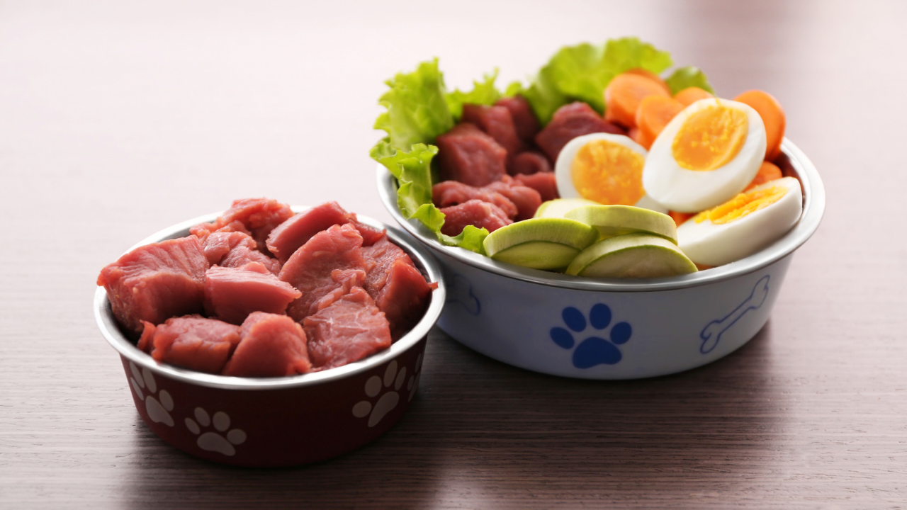

BOSTON TERRIER
El Boston Terrier es una raza de perro pequeña y compacta, originaria de Estados Unidos, conocida por su carácter amigable, enérgico e inteligente. Tiene un cuerpo robusto y musculoso, con una cabeza cuadrada, ojos grandes y expresivos, y un hocico corto. Su pelaje es corto, liso y brillante, comúnmente en colores como blanco y negro, blanco y atigrado, o blanco y foca. Los Boston Terriers son excelentes compañeros, afectuosos y se llevan bien con niños y otros animales. Necesitan ejercicio diario moderado y un aseo mínimo debido a su pelaje corto. Aunque generalmente son saludables, pueden ser propensos a problemas respiratorios y oculares debido a su hocico corto. Son perros inteligentes que responden bien al entrenamiento positivo, aunque pueden mostrar cierta testarudez, lo que requiere paciencia y consistencia en su entrenamiento.
BENEFICIOS DE LOS JUGUETES PARA PERROS
Los juguetes para perros ofrecen numerosos beneficios esenciales para el bienestar general de nuestras mascotas. En primer lugar, proporcionan una fuente constante de entretenimiento y diversión, manteniendo a los perros ocupados y felices. Estos juguetes son fundamentales para la estimulación mental, ya que desafían el intelecto del perro, previniendo el aburrimiento y el comportamiento destructivo que puede surgir de la falta de estímulos. Además, los juguetes promueven el ejercicio físico, ayudando a los perros a mantenerse activos y saludables, lo cual es crucial para prevenir problemas de obesidad y mantener una buena condición física. Los juguetes interactivos, como los de lanzar y recoger, fortalecen el vínculo entre el dueño y la mascota, fomentando la comunicación y la confianza mutua. Por otro lado, los juguetes masticables son esenciales para la salud dental, ya que ayudan a limpiar los dientes, reducir la acumulación de placa y masajear las encías, contribuyendo a una mejor higiene bucal. En resumen, los juguetes para perros son una herramienta vital que contribuye significativamente a la salud física, mental y emocional de nuestros compañeros caninos.
COMIDA PARA PERROS
La comida para perros tipo BARF (Biologically Appropriate Raw Food) se basa en una dieta de alimentos crudos biológicamente apropiados que imita la alimentación natural de los antepasados de los perros en la naturaleza. Esta dieta incluye carnes crudas, huesos carnosos, vísceras, frutas y verduras, proporcionando una nutrición completa y balanceada. Los defensores de la dieta BARF argumentan que este tipo de alimentación mejora la salud general de los perros, promoviendo un pelaje más brillante, dientes más limpios, mejor digestión y mayor energía. Además, al evitar los conservantes y aditivos artificiales presentes en muchos alimentos comerciales para perros, la dieta BARF puede reducir las alergias alimentarias y los problemas de piel. Sin embargo, es crucial que los propietarios se informen adecuadamente y consulten con un veterinario para asegurar que la dieta sea equilibrada y segura, evitando riesgos de contaminación y asegurando que se cumplan todas las necesidades nutricionales del perro.